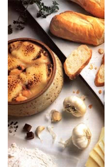

KITCHEN GARDEN
It could be the most important plant in the garden.
ALLIUM SATIVUM IS A CINCH to grow, it's indispensable to a wide range of cuisines, and it's incredibly good for you. Furthermore, whether planted among other vegetables and flowers or ground up and used in a spray, garlic can keep crops healthy by discouraging pests and diseases. In short, no garden should be without this versatile herb.
©AL CLAYTON FOOD STYLING BY MARY ANN CLAYTON
Though the pungent plant probably originated in what is now the Kirghiz region of central Asia (on the Soviet-China border), garlic played a part in a wide variety of cultures over many centuries. References to the herb have been found in such ancient sources as 5,000-year-old Sanskrit, as well as 4,500year-old Babylonian and 3,000-yearold Chinese writings. The Old Testament, too, tells us that the Hebrews wandering in the wilderness regretted not having the onions, leeks, and garlic they had left behind in Egypt.
As an illustration of its value to the Egyptians, 15 pounds of garlic could buy a healthy male slave. A full 1.5 million pounds (worth more than $2 million today) were consumed by workers during the 20 years it took to build the great pyramid at Giza (circa 2500 BC), and pyramid builders actually w ent on strike when a drought caused garlic and other food shortages (these were people without much of a union, too!).
In the Odyssey, Ulysses used an herb called moly (Allium moly is a species of wild garlic) to ward off the black magic of the sorceress Circe, and ancient Greeks often placed garlic on stones at crossroads as offerings to Hecate, a goddess of the underworld. Centuries later, garlic bulbs were thought to keep vampires at bay and were used to ward off the evil eye. (If no bulbs were at hand, one could simply shout, "Garlic in your eyes!")
Because it was used so extensively in the medicine, magic, and cuisine of the lower classes, garlic was often shunned by the elite. Though six mummified cloves were discovered in King Tut's tomb, garlic was forbid den to Egyptian priests, and Rome's senate forbade the use of garlic by those visiting the Temple of Cybele. Garlic is still taboo for many Buddhist priests and Hindu Brahmans, who believe this "hot" food distracts minds and souls from a spiritual path. An Islamic story of creation holds that garlic grew in the Garden of Eden wherever the Devil stepped with his left foot, and onions sprang up where he placed his right.
Even so, ancient Egyptians, Chinese, Babylonians, and Greeks (as well as herbalists of later centuries, including Native Americans) used garlic to fight-among other things-intestinal disorders, respiratory infections, scurvy, ulcers, insect and animal bites, blisters, and aging. Phoenicians and Vikings carried it on their long sea voyages. Romans (along with medieval peasants) considered the pungent bulb to be an aphrodisiac, and they also fed garlic to both their soldiers and gladiators to provide courage and strength.
One interesting, if grisly, garlic tale concerns some thieves who, as the Black Plague swept through Marseilles in 1721, consumed copious amounts of garlic mixed with wine and were able to rob plague victims without contracting the disease. It's known that garlic sprays were used in attempts to disinfect the burying grounds of plague victims.
During World War I, medical personnel soaked sterile bandages in diluted garlic juice to combat wound infections. Around the same time, garlic inhalants and compresses were somewhat successful in treating tuberculosis. The curative element is allicin, a garlic compound isolated in 1944, which gives the herb its odor as well as its antimicrobial and, some claim, antiviral properties. According to Russian scientists, allicin differs from most antibiotics in that it kills harmful bacteria without affecting beneficial ones, and it's used in the USSR to fight flu epidemics. More recently, the British medical journal Lancet reported that garlic juice apparently reduced serum cholesterol in volunteers eating high-cholesterol diets. The Japanese recently discovered that the regular use of garlic hastens the absorption of Vitamin B,; they use the vitamin to relieve nervous inflammations, nausea resulting from pregnancy, and mental depression. They also spray patients with a solution of garlic and water for problems as wide-
The strongly scented bulbs are rich in vitamins B and C as well as in phosphorus, calcium, and potassium,ranging as heart disease and frostbite.
Researchers are currently looking into the possibility that daily garlic consumption may help reduce high blood pressure and that it may help cleanse the intestines of toxic substances-even attracting and then expelling from the body such harmful pollutants as heavy metals and carcinogenic additives.
In addition to their purely medicinal properties, the strongly scented bulbs are rich in vitamins B and C as well as in phosphorus, calcium, and potassium (and one clove contains only seven calories). Many people consume garlic to ward of common colds and traveler's dysentery. Some also feed it to their pets to control flea and worm infestations. And for centuries it has been known that garlic mixed with fresh meat can double or quadruple its shelf life.
Certainly, as an organic pest repellent, garlic is nearly unbeatable. It deters insects (particularly aphids) on such crops as beets, carrots, parsnips, strawberries, and tomatoes. It also acts as a protective shield when planted around fruit trees. It can even discourage Japanese beetles from attacking rosebushes. Garlic sprays, however, are a more effective repellent than the plants alone, and they also deter such diseases as downy mildew and early tomato blight. (Just grind some cloves in a blender with a small amount of water, strain this mushy liquid through cheesecloth, dilute it with about one quart of water, add a bit of biodegradable detergent to help the juice adhere to the plants, and put it into a hand sprayer.) You will, however, have to spray daily for heavy pest infestations.
As an allium, garlic is closely related to onions and other members of the lily family. But instead of producing one underground bulb, this perennial produces a cluster of 10 or more small bulbs called cloves. Each one of these cloves, when set out in the garden, will produce an eight- to 24-inch-tall stalk with a lavender flower head and an underground cluster of cloves. A new plant grows from one of these cloves, and you can start your own using garlic right from a grocery store's produce section.
Garden suppliers may give you a choice between early-maturing (90 days) white or Mexican varieties and late-maturing (110 days) pink or Italian cultivars. The white types produce higher yields than the pinks but don't store as well.
Elephant garlic (also known as jumbo garlic) is actually a type of leek, A. scorodoprasum, or sometimes A. ampeloprasum. It produces huge, mild-tasting, easy-to-peel bulbs in around 100 days. These less pungent bulbs can be eaten much more freely than true garlicand can even be diced raw for use in salads. They can be cooked whole with other vegetables or, perhaps, with a roast and are also delicious when simply steamed and served alone in a cream sauce as a side dish.
Hardy and productive rocambole (Allium sativum var. ophioscorodon)--also called serpent garlic, or sand leek-has been described as looking like a cross between a garlic and an Egyptian onion tied in a love knot. A close kin to wild garlic, its underground bulbs are sometimes smaller than regular garlic, and its unusual-looking flower stalk coils, then straightens, and later produces a cluster of bulblets at the top of the stalk. Rocambole's advantage is that you can plant the bulblets (they take two seasons to form mature cloves) and keep all the cloves for eating. Somehow rocambole can handle the job of producing bulblets at the same time that it forms goodsized cloves, something regular garlic can't do. (In fact, if your garlic does produce bulblets, you should snap them off.)
A good soil-preferably a sandy loam with plenty of organic matter-is more important for garlic than for onions. At the very least, the planting site should be fertile and well drained with a pH of 5.5 to 6.8. It must also be sunny. Garlic needs cool temperatures during its early stages of growth and is not harmed by frost or light freezing. Later, however, warm weather and plenty of sun are required for good bulb development.
After tilling and raking the soil, plant the cloves directly in the garden four to six weeks before the last frost date. Sow them one to two inches deep with the pointed end up, spacing them four to six inches apart (10 inches for elephant garlic, which must be planted in the fall) to insure big bulbs. (A half pound of cloves will plant a 100-foot row.) Short-season gardeners may want to start the bulbs indoors about six weeks before it's time to set the seedlings out. You'll get bigger bulbs by planting two to four weeks before the first autumn frosts, but in areas with severe winters such fall plantings will have to be mulched heavily. However, when mulched, fall-planted garlic does well even in Canada.
Once planted, the crop requires very little care except for weeding, which should be done by hand to prevent damage to the roots. Again, a mulch will reduce weed growth and will help conserve the moisture that is essential in the early stages of growth. Water if dry conditions prevail, and-except for rocambole--remove flower heads to produce larger bulbs.
As you've probably surmised, garlic has few pest or disease problems. The only exceptions might be onion thrips or root maggots. Thrips puncture plant cells in order to feed, marking the stems with small, whitish blotches that run together to form silvery areas. Eventually, the tissue will wither and collapse. Root maggots hatch from eggs laid at the roots of plants and then feed on the stems. The best control method for both these insects is to rotate your allium crops so they are not grown in the same place more than once every four to six years. Spacing garlic throughout the garden will also keep any invading pests from traveling from plant to plant. Adding sand or wood ashes to the top layer of the planting rows is another preventive measure. If thrips are common in your area, eliminate their winter homes by destroying weeds around the garden in the fall.
The only disease that occasionally attacks garlic is downy mildew, which can be seen best in the morning while dew is still on the leaves. Its first symptoms take the form of yellow or grayish, sunken, watersoaked spots, and it too can be prevented by crop rotation.
Once the leaves begin to yellow, discontinue watering. When the tops begin to droop, knock down the aboveground growth to hasten curing. A few days later, loosen the soil, and either pull out the entire plant or lift it gently with a spading fork. (The younger the bulb, the milder it will be.) Spread the garlic in a cool, dry, shady location (humidity higher than 70% can cause the bulbs to mold), then cut off the tops and store the bulbs in mesh bags or on trays. You can also leave the tops on and, when dry, braid them to form attractive garlic ropes. Cured bulbs will last for six to 12 months if hung in a dry place.
Asians are fond of pickling garlic in honey,soy sauce, or vinegar, and the resulting pickles are surprisingly mild-tasting.
Asians are fond of pickling garlic in honey, soy sauce, or vinegar, and the resulting pickles are surprisingly mild-tasting. In France, a famous garlic mayonnaise, aioli (called alt= oli in Spain), is made with olive oil, egg yolks, lemon juice or vinegar, and, in some regions, bread crumbs. The Greeks have a similar sauce called skordalia made with bread crumbs, garlic, egg yolks, lemon juice, oil, and mashed potatoes or almonds or walnuts. Such sauces can be eaten with almost any meat, fish, vegetable, or bread.
The following recipes are taken from The Garlic Lovers' Cookbook ($9.45 paperback, $12.45 spiral-bound, postpaid), published by The Gilroy Garlic Festival Association, Inc. (P.O. Box 2311, Gilroy, CA 95020), which holds a huge garlic fair each August in Gilroy, "the garlic capital of the world."
This Mexico-inspired soup by Gilroy garlic grower and shipper Don Christopher is also delicious .when reheated.
6 beef-flavored bouillon cubes
8 cups boiling water 14 large cloves garlic
2 tablespoons butter
2 tablespoons minced parsley
tablespoon flour
1/4 teaspoon freshly ground pepper 6 raw egg yolks, beaten
6 thin slices Monterey Jack cheese
6 small slices French bread, toasted
In a large bowl or saucepan, combine bouillon cubes and water, stirring until cubes are dissolved. Peel garlic, and mince (can be done quickly in a blender or food processor). In a heavy saucepan, over low heat, brown garlic lightly in butter with minced parsley, stirring constantly so as not to burn. Add flour, and stir until slightly browned. Add broth and pepper; simmer at least 30 minutes to 1 hour. Just before serving, slowly add egg yolks, stirring constantly. Place cheese on toasted bread, and place 1 slice in each of 6 heatproof serving bowls. Ladle soup into bowls, and place bowls under broiler just long enough to melt cheese. (This could also be done in microwave oven.) Serve at once. Makes 6 generous servings.
"Delicious and pretty," says Clara M. Lutz of Redondo Beach, California, and we have to agree.
6 medium to large tomatoes, sliced 3 cloves fresh garlic, minced
1 bunch green onions, chopped fine (include some green tops)
1/2 cup finely chopped parsley
1/2 teaspoon salt
Coarse black pepper to taste
1/3 cup corn oil
1/4 cup brown cider vinegar
1tablespoon Dijon mustard
Arrange tomatoes on a shallow dish or platter. Mix garlic, onions, parsley, salt, and pepper. Sprinkle over tomatoes. Cover with plastic wrap, and refrigerate for 3-4 hours. Prepare dressing by combining oil, vinegar, and mustard. At serving time, shake well and pour over tomatoes. Serves 6.
Carla Johnson of Petaluma, California, came up with this tart and tangy dish.
2 bunches broccoli
1/4 a cup olive oil
3-4 cloves fresh garlic, pressed or minced '/z teaspoon salt
1/4 teaspoon oregano
1/4 cup wine vinegar
Cut off tough ends of broccoli, and discard. Slice remaining stems and flowers into bitesized pieces. Steam or boil until just tender. Drain and cool. Toss with olive oil, garlic, salt, and oregano. Add vinegar, and toss again. Refrigerate at least 1 hour to marinate before serving. This can be prepared the day prior to serving and can be served chilled or at room temperature. Serves 10.
Gilroy's Karen Christopher's classic combination makes a terrific salad/dessert.
1/2 cup mayonnaise
1 tablespoon cream 1 tablespoon lemon juice
2 cloves fresh garlic, pressed
1-1/2 ounces Roquefort or blue cheese,
crumbled 8 fresh Cornice pears Lemon juice 8 lettuce leaves
Mix together mayonnaise, cream, 1 tablespoon lemon juice, garlic, and cheese, and chill at least 2 hours. Cut pears in half, and remove seeds and skins. Sprinkle pears with additional lemon juice to prevent browning. Place on lettuce leaves for individual servings, and top with dressing. Serves 8. (This dressing is also delicious on most greens or can be used as a dip for fresh raw vegetables.)
MOTHER'S GARDENER, SUSAN SIDES, heartily endorses the pungent herb:
A year without garlic? Never! My plot increases each season, and still gift-giving, replanting, and a houseful of hungry fans take their toll. With over 300 different kinds throughout the world (many of which are available from lesser-known seed companies and from The Seed Savers Exchange), who could become bored? Here in our North Carolina test gardens, the ceremonial sowing comes two to four weeks before the first frost in fall. This increases our harvest by an average of 50070 and gives us one last thing to poke into the ground.
Once the green shoots are a few inches tall, we mulch to keep the cloves from heaving in winter and to suppress weeds. Over the years a one to two inch layer of small or shredded leaves topped by a very light layer of clean straw has proved best. As a bonus it conserves moisture, which is just what these thirsty alliums require all season long.
That is, they do until midsummer to late summer when the leaves just begin to yellow -the signal to stop watering and let those papery protective skins develop. I don't know about you, but for this reason we've not had much success tucking garlic (or onions and shallots, for that matter) in among other vegetables. Instead, we give these three their own bed so that their drying-of time doesn't conflict with the water needs of everything else.
|
 |
|
|